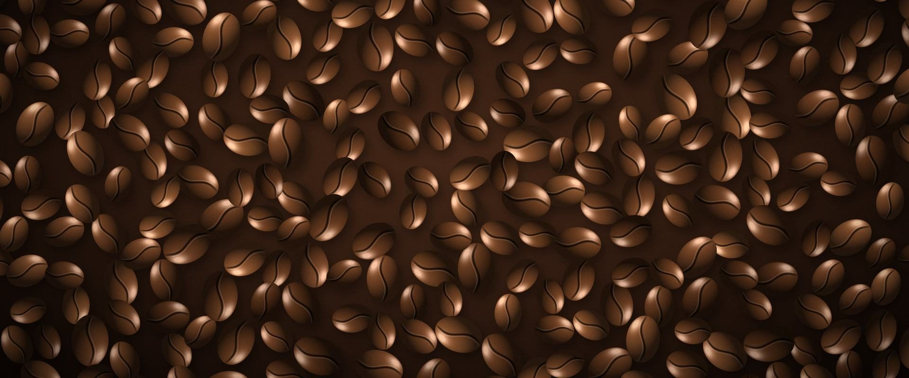
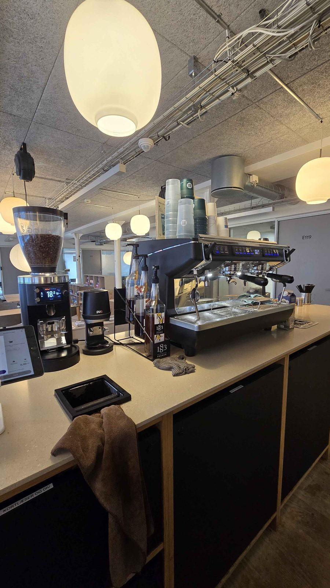

Ten Pillars
Coffee
Velkommen til Ten Pillars Coffee håndbog
Vi vil gerne gøre det nemt og trygt at stå bag baren, så vi sammen kan servere god kaffe hver gang. Brug håndbogen som støtte til din oplæring, og spørg en anden frivillig, hvis du er i tvivl.
Find den drik, du vil lave, og kom i gang.
Se alle guides